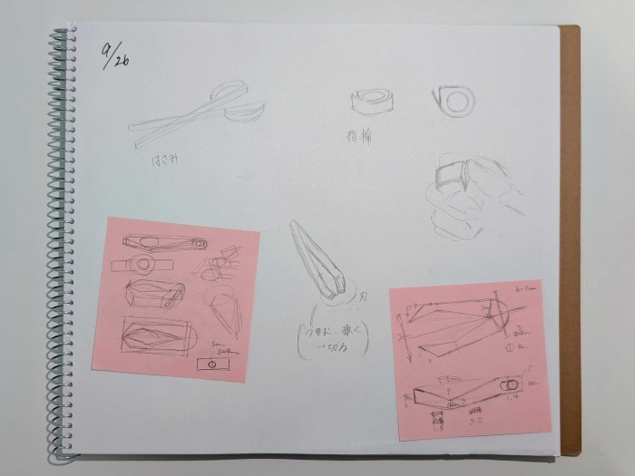

・試作品
印刷してみて
・ピンセットが固くて動かなかった
・円柱と外側のパーツがすぐ取れてしまう

・ピンセットが固くて動かなかった
・円柱と外側のパーツがすぐ取れてしまう
・完成品
試作品からの改善点
・ピンセットの厚さを調節
・パーツの結合部をジョイント機能を使い、ズレを調節
→いまいち機能が分からなかったので、できているかは分からない
・安定性のためにピンセット本体と円柱部分を結合

・ピンセットの厚さを調節
・パーツの結合部をジョイント機能を使い、ズレを調節
→いまいち機能が分からなかったので、できているかは分からない
・安定性のためにピンセット本体と円柱部分を結合
・設計ファイル（完成品）
・作品の説明
とげが抜きやすいように穴のパーツがついているピンセット
使わないときには外したり、外側のパーツを動かすことができる
使わないときには外したり、外側のパーツを動かすことができる
・なぜ作ろうと思ったのか
とげを抜く際に五円玉を使うことがあるが、使いたいときに持っているとは限らない
→ピンセットと一体化していればいちいち探すこともない
→ピンセットと一体化していればいちいち探すこともない
・調べたサイト
・Fusion360で製作中